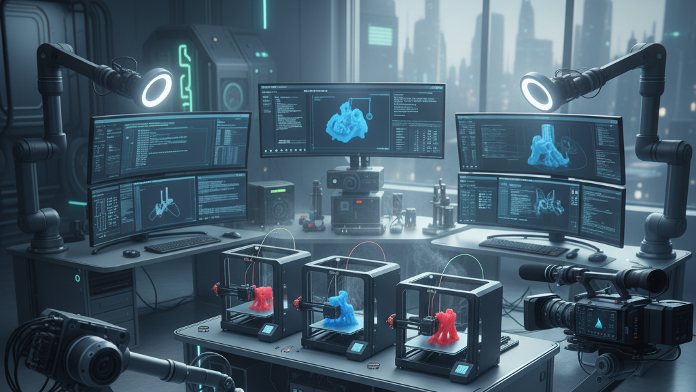
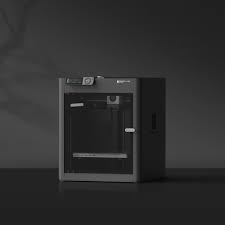

Tecnologia.
Bienvenido a el apartado de tecnologia
Conoce mas sobre novedades en las impresoras 3D, avances en el mercado de computadoras e infromacion muy util de camaras de video
Impresoras 3D
Bambu Lab K1
La Bambu Lab P1S es una impresora 3D de alto rendimiento que destaca por su velocidad, calidad de impresión y por venir lista para usar prácticamente desde que la sacas de la caja. Se considera una evolución del modelo P1P, ya que incorpora un cerramiento completo, lo que la hace ideal para imprimir con una gama más amplia de materiales, especialmente aquellos que requieren temperaturas más estables como el ABS y ASA.
Características Principales.
Estructura y Volumen de Impresión
- Volumen de impresión: 256 x 256 x 256 mm³, un tamaño generoso para la mayoría de los proyectos.
- Chasis: Construcción robusta de acero soldado que garantiza estabilidad, minimizando vibraciones incluso a altas velocidades.
- Cerramiento: Viene con un cuerpo completamente cerrado con paneles de plástico y vidrio. Esto ayuda a mantener una temperatura constante en la cámara de impresión, lo cual es crucial para materiales propensos a deformarse (warping) y mejora la calidad de impresión en general.
Rendimiento de Impresión
- Velocidad de impresión: Puede alcanzar una velocidad máxima de hasta 500 mm/s.
- Aceleración: Cuenta con una impresionante aceleración de hasta 20,000 mm/s², lo que le permite alcanzar altas velocidades rápidamente sin sacrificar la calidad.
- Cinemática CoreXY: Este sistema permite movimientos rápidos y precisos del cabezal de impresión.
- Calidad de primera capa: Gracias a su sistema de nivelación automática de la cama (ABL) y a la compensación de vibraciones, la P1S asegura una primera capa perfecta en cada impresión, lo cual es fundamental para el éxito de la pieza.
Camaras de video
Mis juegos favoritos y últimas noticias.
Mis juegos favoritos y últimas noticias.
Mis juegos favoritos y últimas noticias.
Mis juegos favoritos y últimas noticias.
Mis juegos favoritos y últimas noticias.
Mis juegos favoritos y últimas noticias.
Mis juegos favoritos y últimas noticias.
Mis juegos favoritos y últimas noticias.
Mis juegos favoritos y últimas noticias.
Mis juegos favoritos y últimas noticias.
Computadoras
Mis juegos favoritos y últimas noticias.
Este es un párrafo de ejemplo en mi primera página web.
Ir a GoogleLista de compras:
- Manzanas
- Pan
- Leche
Pasos para hacer café:
- Calentar agua
- Añadir café
- Revolver y disfrutar
Este texto está dentro de un contenedor (div).